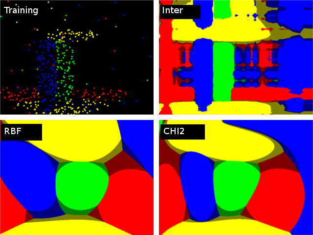

enum cv::ml::SVM::KernelTypes
Overview
SVM kernel type More…
#include <ml.hpp> enum KernelTypes { CUSTOM =-1, LINEAR =0, POLY =1, RBF =2, SIGMOID =3, CHI2 =4, INTER =5, };
Detailed Documentation
SVM kernel type
A comparison of different kernels on the following 2D test case with four classes. Four SVM::C_SVC SVMs have been trained (one against rest) with auto_train. Evaluation on three different kernels (SVM::CHI2, SVM::INTER, SVM::RBF). The color depicts the class with max score. Bright means max-score > 0, dark means max-score < 0.
Enum Values
CUSTOM
Returned by SVM::getKernelType in case when custom kernel has been set
LINEAR
Linear kernel. No mapping is done, linear discrimination (or regression) is done in the original feature space. It is the fastest option. \(K(x_i, x_j) = x_i^T x_j\).
POLY
Polynomial kernel: \(K(x_i, x_j) = (\gamma x_i^T x_j + coef0)^{degree}, \gamma > 0\).
RBF
Radial basis function (RBF), a good choice in most cases. \(K(x_i, x_j) = e^{-\gamma ||x_i - x_j||^2}, \gamma > 0\).
SIGMOID
Sigmoid kernel: \(K(x_i, x_j) = \tanh(\gamma x_i^T x_j + coef0)\).
CHI2
Exponential Chi2 kernel, similar to the RBF kernel: \(K(x_i, x_j) = e^{-\gamma \chi^2(x_i,x_j)}, \chi^2(x_i,x_j) = (x_i-x_j)^2/(x_i+x_j), \gamma > 0\).
INTER
Histogram intersection kernel. A fast kernel. \(K(x_i, x_j) = min(x_i,x_j)\).